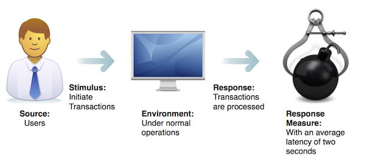

Architecture Patterns
Table of Contents
1 About This Sprint
This sprint covers different patterns that are useful for getting started with a software architecture.
2 User Stories covered in this Sprint
- As a software architect I want to start my design with a well known structure so that I can be sure that I am addressing my quality requirements in the best way.
3 Introduction
I am going to address the user stories in this sprint from two different perspectives. Both of them backs up to how Christopher Alexander described a pattern language for architectures (as used e.g. by Gamma et al. in the Design Pattern book). The first perspective is the common and widely used idea of architectural styles and architectural patterns as a design template. For example, if I describe a system as having a “Layered Architecture”, being a “Pipes and Filters system”, or a “Model-View-Controller” architecture, this means that the basic structure of the architecture is done according to these patterns. They can be described as ready-made solutions that describe the overall structure of your system, along with the roles and responsibilities of each component. This is the approach taken e.g. by Buschmann et al. (1996)
The second perspective is the one that Bass et al. (2012) uses, where they describe patterns as specific building blocks that you use for specific purposes, and thus your overall architecture is composed by these smaller building blocks. They refer to these blocks as Architecture Tactics. The two perspectives are not mutually exclusive. You are likely to start with an overall architecture pattern to setup a potential for achieving a certain blend of quality requirements. As you continue to design your architecture, you will then encounter specific challenges that you need to design an architectural solution for, where you will apply architectural tactics to address the challenge.
3.1 Architecture Patterns
I will not go through all of the architectural patterns or the tactics; there are simply too may of them, it will simply be a boring enumeration, and it does not help you understand them. It is, however, good to have an overview of the architectural styles, since these will be your starting point when creating (or approaching an existing) new system. Just as with design patterns, it is good to know their names, roughly how they organise your system, and what problem(s) they address, since this means that you will share a vocabulary with other software developers.
Study the Architectural Patterns in Buschmann et al. so you have a broad overview of the problems they address and how they are structured.
| Pattern | Brief Summary |
|---|---|
| Layered | Decompose system into groups of subtasks that are on different levels of abstraction (such as closer to the user interface or closer to the metal) |
| Pipes and Filters | Process a data stream in a series of different steps |
| Blackboard | Several “workers” collaborating over a shared data set |
| Broker | Decouple distributed components |
| Model-View-Controller | Separate data and rules for data consistency from presentation and user input |
| Presentation-Abstraction-Control | Separate viewing and manipulating data into independent but cooperating agents |
| Microkernel | Support a minimal core where it is easy to plug in new components |
| Reflection | Separate the software into a self-aware “knows how to configure and run jobs” part and a “knows how to do the job” part |
3.2 Architecture Tactics
The architecture tactics are organised in a different way. The classic design patterns and architecture patterns are described with a generic problem, an example, a solution, and a discussion of the solution. Tactics start from the notion of quality attribute scenarios, which is a way to define the parameters of a quality requirement. Consider the example in Figure 1. In this scenario a user starts a transaction when the system is running as normal. The user expects the transaction to be processed within two seconds on average.

Figure 1: An example of a Quality Attribute Scenario
The next step is to find a tactic that can control the response such that the response measure is achieved. In the example in Figure 1, how may we ensure that transactions are processed within an average of two seconds? This is a performance issue, so we look in Bass et al. under Chapter 8, “Performance” and find the tactics listed in Table 2. We then choose the tactic(s) that best suit our particular problem.
| Overall Strategy | Specific Tactics |
|---|---|
| Control Resource Demand | Manage Sampling Rate |
| Limit Event Response | |
| Prioritise Events | |
| Reduce Overhead | |
| Bound Execution Times | |
| Increase Resource Efficiency | |
| Manage Resources | Increase Resources |
| Introduce Concurrency | |
| Maintain Multiple Copies of Computations | |
| Maintain Multiple Copies of Data | |
| Bound Queue Sizes | |
| Schedule Resources |
Notice that tactics do not tell you exactly which components are needed, or what responsibilities they should have. Instead they merely discuss the solution, and things to consider when using this particular solution. It is then up to you to define which components you will need to implement the tactic, and where in your overall architecture (e.g. which layers) they fit. Not only does this give you a freedom as software designer, it enabled Bass and his colleagues to discuss and categorise architecture solutions for quality requirements that were traditionally “ignored” because they could not be expressed as a set of interacting components.
3.3 One More Thing…
One part of architecture patterns which I have not mentioned yet is that just as there are basic design principles for object oriented designs, there are also good practices for architectures. C. Larman, Applying UML and Patterns, 3rd Edition summarises a set of these with respect to package design (which is as close to architectures as the Larman book goes). These principles should be applied even when working within a particular architecture pattern or when designing in a particular architecture tactic.
4 TODO Learning Material
4.1 Book Chapters
- C. Larman, Applying UML and Patterns, 3rd Edition, Chapters:
- Package Design
4.2 Further Reading
- F. Buschmann, R. Meunier, H. Rohnert, P. Sommerlad, and M. Stahl. Pattern-Oriented Software Architecture - A System of Patterns. John Wiley & Sons, Chichester UK, 1996.
- L. Bass, P. Clements, and R. Kazman. Software Architecture in Practice, Third Edition. Addison-Wesley Publishing Co., Reading MA, 2012.
- A. Brown, G. Wilson, The Architecture of Open Source Applications, available online at: http://www.aosabook.org/en/index.html .
- The chapter on architectural tactics (Chapter 5) from the Second Edition of Bass, Clements, and Kazman
5 Experiential Learning
5.1 Sprint Test Plan
Go through the user stories for this sprint and make sure you have a clear understanding of how to solve each of them.
Revisit and update your risks and contingencies section.
Add and/or revise the following items to your glossary:
- Architecture Pattern (also the individual architecture patterns mentioned above)
- Architecture Tactic (also the individual tactics for different quality attributes)
- Quality Attribute Scenario
Make sure you understand what each item is, the notation for them, and how to use them either in isolation or together with the other concepts.
5.2 Self-Study: Architecture Challenges and Tactics
Study the architecture of a couple of open-source systems in the AOSA-book (http://www.aosabook.org/en/index.html). Identify the main challenges they have with respect to:
- Modifiability
- Performance
- Testability
You are free to study any of the systems, but you should be warned that not all of these texts actually describe the architecture of the applications or, if they do, in a way that enables evaluation with respect to quality attributes or tactics. I have previously used the following chapters for similar purposes in software architecture courses:
Once you have identified the main challenges for the system, explore the different architecture tactics that might address the challenges (Unless you have access to the third edition of Bass et al., you may use The chapter on architectural tactics (Chapter 5) from the Second Edition of Bass, Clements, and Kazman).
How did they decide to address the challenge? Which architecture tactics best correspond to their solution? Exactly how is this tactic instantiated into a workable system architecture?
The intention of this self-study task is that by going in one direction (from an already solved solution to a generic tactic) you also get experience in seeing how the other direction (going from the tactic to a workable solution) may be done.
5.3 Assignment: Quality Attribute Scenarios
List, briefly describe, and prioritise the most important quality attributes that you need to consider in your system. Develop quality attribute scenarios for the most important ones.
Tasks:
- Identify the most important quality attributes for your system.
- Briefly describe each of them so that it is possible to understand what the quality attribute means in the context of your system and why it is imporant.
- Prioritise your quality attributes so you know which are the most important for your system.
- Develop Quality Attribute Scenarios for the top five most important quality attributes.
Document Structure:
The title for this Assignment Document is: Quality Attribute Scenarios for System <system name> The assignment document shall contain the following items:
- Title Page
- Title: <assignment document title>
- Sub-title: “Assignment in the course <course code><course name>”
- Date
- Authors and Author Contribution
Add a table with all authors, their social security numbers, and the share in percent that the author has contributed in thinking (discussing, reasoning, etc.) and in actually writing the submitted assignment document.
Author Name Social Security Number Thinking Writing
- System Description
A brief description (2-3 paragraphs) of your interpretation of what the goal of the system is.
- Prioritised list of Quality Attributes
List your quality attributes in order of priority and briefly describe them.
- Quality Attribute Scenarios
Your five most important quality attributes, expressed as quality attribute scenarios. This may be expressed as figures, but it is more useful if you present them in a table:
Aspect Value Source Stimulus Artifact Environment Response Response Measure Note: You also need to explain your values with one or two sentences for each aspect.
Commit and push this document to your project repository.
Conditions of Satisfaction:
When marking this part of the assignment we are looking for the following:
- Does the title page contain a table with authors and author contribution?
- Size of assignment: Are there more than five quality attributes listed?
- Size of assignment: Are there five quality attribute scenarios?
- Do the prioritisation of the quality attributes make sense with respect to the system?
- For each scenario: Are appropriate sources, stimuli, and artifacts listed?
- For each scenario: Is the environment reasonable?
- For each scenario: Is the response appropriate given the stimulus?
- For each scenario: Is the response measure reasonable given the type of response, the stimulus, and the environment?
5.4 Assignment: Architecture Tactics
Explore architectural solutions (in terms of architecture tactics) for your quality attribute scenarios.
Tasks:
- For each quality attribute scenario, identify which architectural tactics (from Bass et al.) that might help you achieve the desired response measure.
- Explore how you would design the architecture of your system to make use of the identified tactics.
- Also consider what support you would need on the design level (in terms of classes and interactions between classes).
Document Structure:
The title for this Assignment Document is: Architecture Tactics for System <system name> The assignment document shall contain the following items:
- Title Page
- Title: <assignment document title>
- Sub-title: “Assignment in the course <course code><course name>”
- Date
- Authors and Author Contribution
Add a table with all authors, their social security numbers, and the share in percent that the author has contributed in thinking (discussing, reasoning, etc.) and in actually writing the submitted assignment document.
Author Name Social Security Number Thinking Writing
- System Description
A brief description (2-3 paragraphs) of your interpretation of what the goal of the system is.
- Architecture Tactics
- Tactics for Quality Attribute Scenario 1: <quality attribute name>
For each scenario:
- List and describe the tactics that may be relevant.
- Briefly discuss how you would use the tactic (or why you decide not to use this particular tactic).
- Identify key components and classes in your design that are affected by applying your selected tactics.
- Tactics for Quality Attribute Scenario 2: <quality attribute name>
- Tactics for Quality Attribute Scenario 3: <quality attribute name>
- Tactics for Quality Attribute Scenario 4: <quality attribute name>
- Tactics for Quality Attribute Scenario 5: <quality attribute name>
- Tactics for Quality Attribute Scenario 1: <quality attribute name>
- Updated Architecture
Present an updated architecture (with as many views that are necessary) that includes the tactics you decided to use. Try to mark, in your architecture, which entities are involved in each tactic, and the responsibilities the entity have in relation to the tactic.
Commit and push this document to your project repository.
Conditions of Satisfaction:
When marking this part of the assignment we are looking for the following:
- Does the title page contain a table with authors and author contribution?
- Size of assignment: Are two to three tactics explored for each of the five quality attribute scenarios?
- Will the discussed tactics address the challenges in each quality attribute scenario?
- Are the tactics adequately translated into a workable architecture and design for the particular system?
- Does the updated architecture have a reasonable potential to address the quality attribute scenarios?
5.5 Update Course Backlog
This sprint, and the previous, describes a “top-down” approach to creating an architecture. By this I mean that you start with the problem and then you create an overall architecture, and then (theoretically) you continue by doing detailed design (e.g. with the help of RUP/UML) inside each component or module. How would this fit into a workflow that is primarily based on RUP/UML, which can be described as a more “bottom-up” approach?
Are there any other questions that you want answered? Add them, along with a brief strategy for how to find an answer.
6 Sprint Acceptance Tests
You are done with this sprint when:
- You have created quality attribute scenarios for your most important quality attributes.
- You have explored architecture tactics that address your quality attribute scenarios.
You may also have
- Explored architecture challenges and tactics for one or more open-source system.
- Updated your Sprint Test Plan
- Updated your Course Backlog